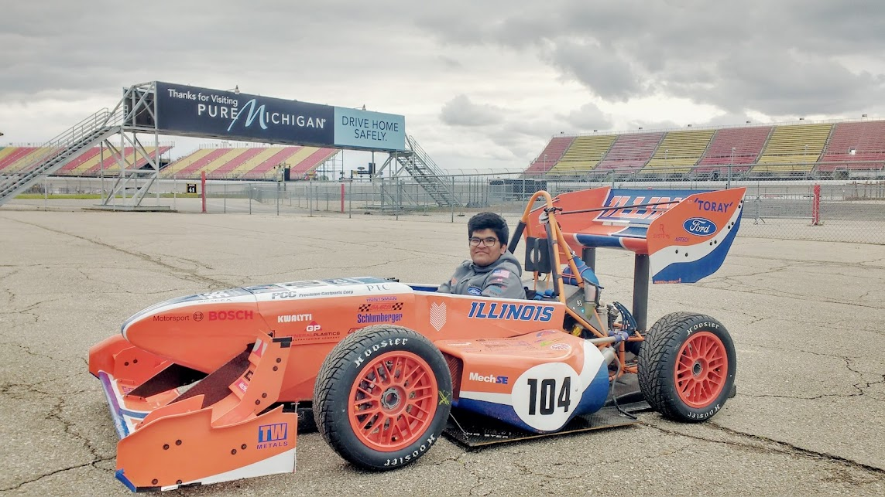
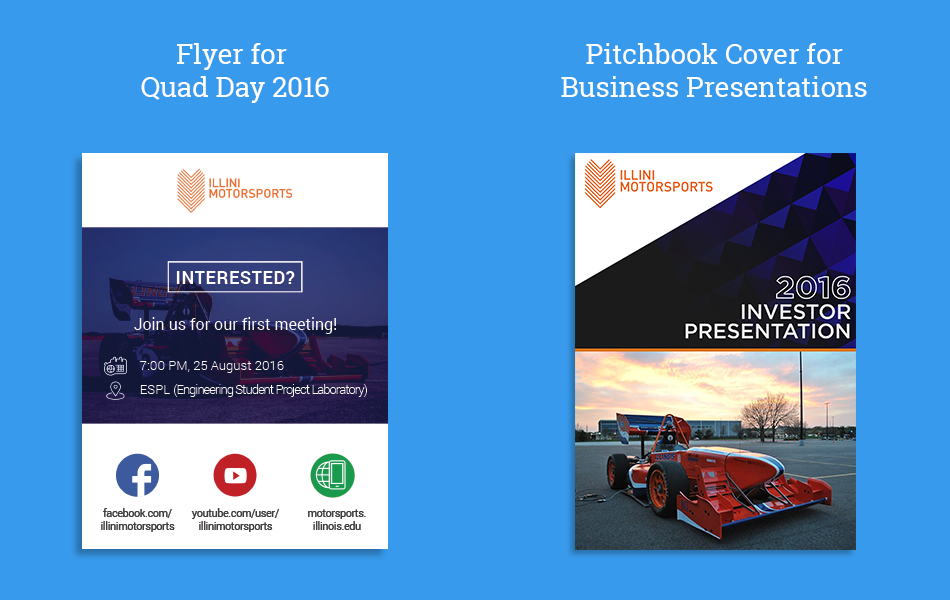
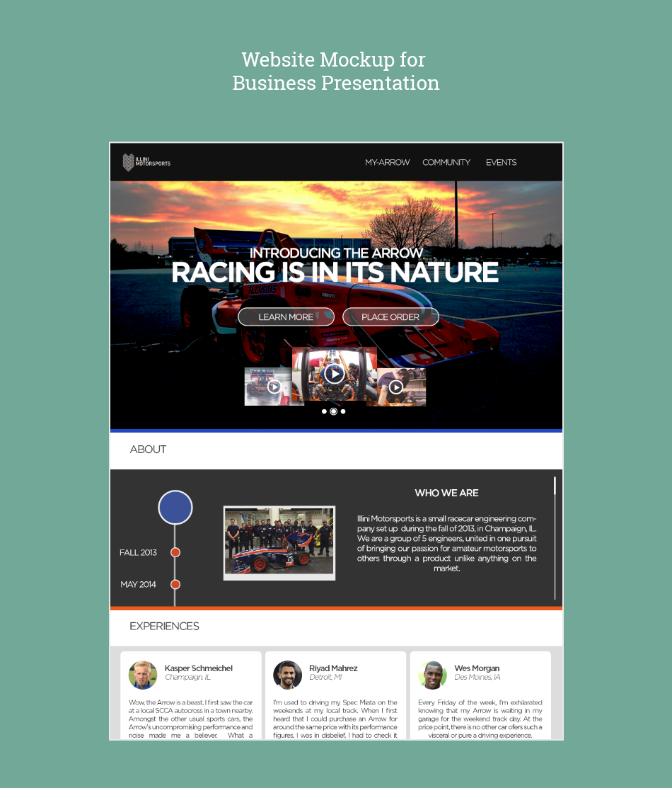

At Formula SAE Michigan, May 2016
I joined Illini Motorsports at the start of freshman year in August 2015. Formula SAE teams build a small formula-style racecar, and compete at events held by FSAE across the world.
Software Development
Currently, I lead the CFD Automation GUI project for the Aerodynamics System. My project aims at assisting and eliminating scope for human error in running Computational Fluid Dynamics simulations on models of the car. I've built two Java applications. The first is used to organize image results from the simulation runs, and provide an interace to navigate across this vast number of images. The second streamlines the process of setting up the simulation runs mentioned above on the Linux cluster they are deployed. I built these using the Swing library, which is part of Oracle's Java Foundation Classes. Here's a link to our GitHub repository.
Design
In the past, I've also helped out with some print design for the team.

